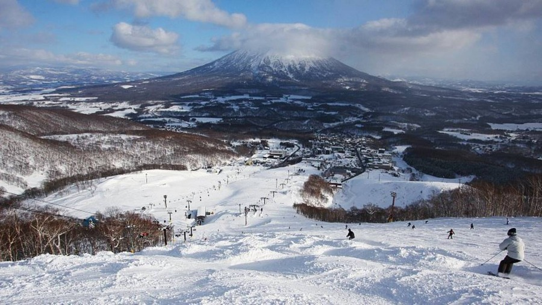

Introduction
Hokkaido (北海道, Hokkaidō) is Japan's fourth largest island, located in the north and relatively underdeveloped. During winter, the region experiences severe weather with heavy snowfall, temperatures dropping below zero, and frozen seas. In contrast, during the summer, Hokkaido does not get as hot and humid as other parts of Japan. Hokkaido is a well-known spot for skiing and snowboarding during the winter season, as it has plenty of fine powder snow and excellent ski resorts such as Niseko, Rusutsu, and Furano.
Niseko
Niseko (ニセコ) is a highly renowned ski resort in Japan, famous for its abundant light powder snow, breathtaking backcountry, and a significant number of foreign visitors, especially Australians. These visitors have helped make the resort popular among the international skiing and snowboarding community over the past few decades. As a result, Niseko's ski resorts are very open and accommodating to foreign tourists, offering them many extensive, lengthy ski runs, ample powder, and an increasing number of post-ski activities to keep them engaged.
Besides its numerous ski trails, Niseko's resorts also provide winter enthusiasts with the chance to experience off-trail skiing, which is a relatively rare activity at most other ski resorts in Japan. The backcountry can be reached through designated gates around the resorts, or with the guidance of tours either on foot or by helicopter. It's also possible to enjoy helicopter tours of nearby Mount Yotei, an almost perfect volcanic cone visible from Niseko.

Sapporo Snow Festival
The Sapporo Snow Festival, also known as Sapporo Yuki Matsuri, is a winter event that takes place for one week every February in the capital city of Hokkaido, Sapporo. It's considered one of Japan's most popular winter festivals.
Initially, the snow festival was started in 1950 by high school students who built a few snow statues in Odori Park. Over time, the event has expanded into a significant commercialized celebration, featuring remarkable snow and ice sculptures that attract more than two million visitors from all over Japan and the world.The festival takes place at three different sites: the Odori Site, Susukino Site, and Tsu Dome Site
Summary
In summary, Hokkaido is renowned for its thriving agriculture and rich aquatic resources, which make use of its extensive fertile land. The Hokkaido prefecture has been ranked as the most attractive prefecture in Japan for ten consecutive years, according to the "National Prefectural Attractiveness Ranking 2018". Hokkaido's many attractions captivate not only the Japanese but also foreign visitors. During the winter season, special events are held, and winter sports are incredibly popular in Hokkaido.